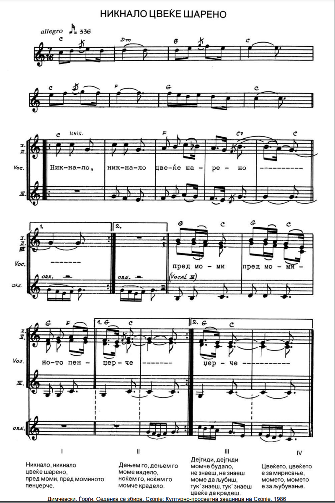

5. Hикнало ÑвекÑе ÑаÑено
Les fleurs se sont ouvertes
(ÐеcеÑа Ð ÑÐºÐ¾Ð²ÐµÑ - 10ème guirlande :06:50 - 08:00)
 |
|
|
 Version Mokranjac |
 Peva: Martin Todorovski |
 Peva: Zuica Lazova |
NOTES
|
[1] То Ñе Ñимболика Ñа коÑом Ñе Ñ ÑÑадиÑионалним пеÑмама ÑÑÑÑеÑемо ÑкоÑо ÑвÑда. Ð¦Ð²ÐµÑ ÐºÐ¾Ñи ce ÑÑва или ce кÑаде Ñе девоÑаÑко невиноÑÑ. Ðема Ñазлога да ÐакедониÑа избегне ово пÑавило. Ровде ÐокÑаÑÐ°Ñ Ð½Ðµ жели ниÑÑа Ñа македонÑким ÑиÑмом од Ñедам ÑакÑова коÑи млади извоÑаÑи инÑÑинкÑивно пÑимеÑÑÑÑ Ñ Ñвом певаÑÑ! |
 |
[1] C'est un symbolisme que l'on rencontre un peu partout dans les chants traditionnels. La fleur que l'on garde ou que l'on vole c'est la virginité des filles. Il n'y a pas de raison pour que la Macédoine échappe à cette règle. Ici encore, Mokranjac ne veut rien savoir du rythme macédonien à 7 temps que les jeunes interprètes impriment instinctivement à leur chant! |